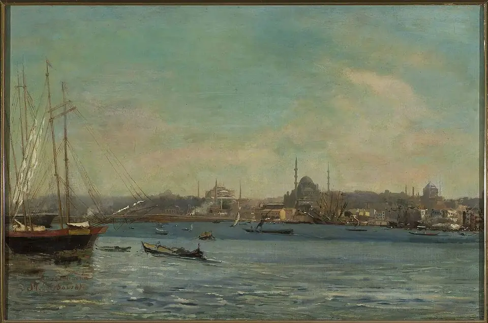

Padişahın Hizmetindeki Polonyalılar
Cihangir – Sadık Paşa ve Ludwika Śniadecka
Bu sokaklarda paşalığa yükselmiş bir Polonyalı romancı yaşadı, şair Słowacki'nin ilk aşkı burada öldü ve padişahın Polonyalı saray ressamının atölyesi buradaydı.

,_wife_of_Micha%C5%82_Sadyk_Pasha_-_MP_1063_MNW_-_National_Museum_in_Warsaw.jpg){kind=link}
- Semt
- Beyoğlu
- Dönem
- 1861–1876
- Ziyaret
- Dışarıdan görülür
Hikâye
1860'ların Cihangir'inde, neredeyse kapı komşusu, romanlardan çıkmış gibi üç kişi yaşıyordu: paşa rütbesindeki bir Polonyalı yazar, şair Juliusz Słowacki'nin ilk aşkı ve padişahın saray ressamı.
Kazak romanlarının yazarı ve 1830-31 Kasım Ayaklanması gazisi Michał Czajkowski, İstanbul'a 1841'de Paris'teki Hôtel Lambert'in, yani Prens Adam Jerzy Czartoryski'nin temsilcisi olarak geldi. Bir yıl sonra bugünkü Polonezköy'ü, Adampol'ü kurdu. Rusya sınır dışı edilmesini isteyince, bundan kurtulmak için 1849 sonu ile 1850 başı arasında Osmanlı tabiiyetine geçip Müslüman oldu; Mehmed Sadık Paşa adıyla 1853'ten itibaren pek çok Polonyalı subayın görev yaptığı Osmanlı Kazak alayına komuta etti. Osmanlı belgelerine göre 1860'larda Cihangir'de bir evi vardı.
Hayat arkadaşı Ludwika Śniadecka, Vilniuslu bilgin Jędrzej Śniadecki'nin kızıydı; genç Słowacki bir zamanlar ona âşık olmuştu. Ludwika 22 Şubat 1866'da Cihangir'de öldü ve Polonezköy'e gömüldü; mezarı bugün hâlâ orada. Varşova Ulusal Müzesi'ndeki 1864 tarihli portresini Stanisław Chlebowski yaptı; bazı araştırmacılara göre bu ressama saray kapısını açan da Sadık Paşa'ydı. Chlebowski Eylül 1871'e kadar Sıraselviler'deki atölyesinde çalıştı, ardından yakındaki Ağa Hamamı Sokağı'nda hem oturup hem çalıştığı bir ev kiraladı.
Padişahın hizmetindeki Polonyalılar bir istisna değildi. 1849'da Macar ihtilali bastırıldıktan sonra General Józef Bem (Murad Paşa) ve Konstanty Borzęcki (Mustafa Celaleddin Paşa) gibi isimler Müslüman olup Osmanlı üniforması giydi. Borzęcki, İstanbul'da basılan, eski ve yeni Türkler üzerine bir kitabın yazarı ve şair Nâzım Hikmet'in büyük dedesiydi. Czajkowski 1872'de Rusya'ya gitti ve 1886'da orada öldü. Cihangir'deki evlerin hiçbiri tespit edilemedi; işaret bir binayı değil, sokağı gösteriyor.

.jpg){kind=link}


Nasıl gezilir
Burası bir müze değil, bir yürüyüş rotası: o döneme ait evlerin hiçbiri işaretli değil. Taksim Meydanı'ndan Sıraselviler Caddesi boyunca inin, yakındaki Ağa Hamamı Sokağı'na sapın ve Cihangir'in sokaklarından Cihangir Camii'ne kadar yürüyün. Caminin terasından Boğaz ve Anadolu yakası görünür; daha kuzeyde, Beykoz tepelerinin ardında Ludwika'nın gömülü olduğu Polonezköy var. Burası bir yerleşim bölgesi; sessiz olun, pencerelerdeki ve kapı önlerindeki insanların fotoğrafını çekmeyin.
Kişiler
- Michał Czajkowski (Mehmed Sadyk Pasza)
- Ludwika Śniadecka
- Stanisław Chlebowski
- Juliusz Słowacki
- Józef Bem (Murad Pasza)
- Konstanty Borzęcki (Mustafa Celaleddin Pasza)
Konum
Beyoğlu, İstanbul · Koordinatlar: 41.03256, 28.98230
Haritadaki konum yaklaşıktır.